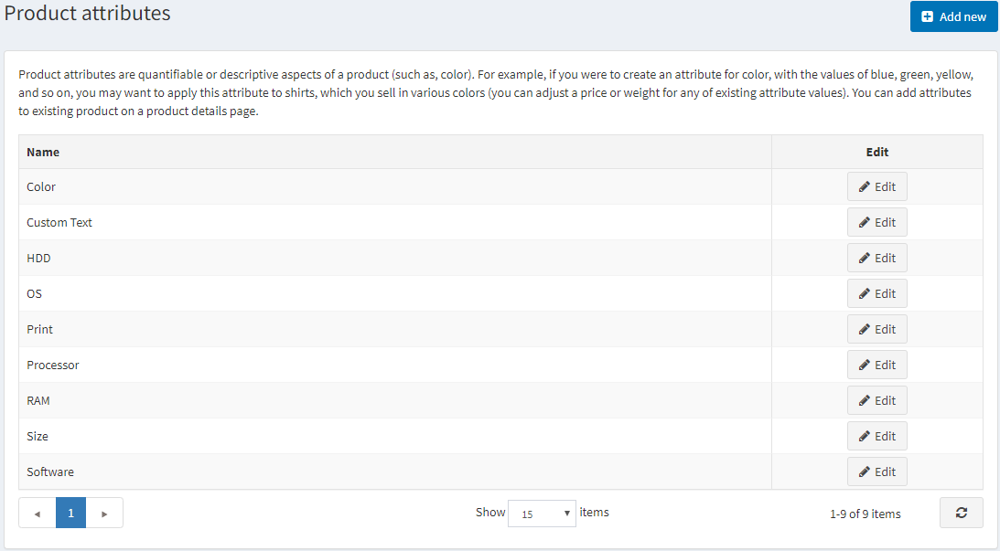
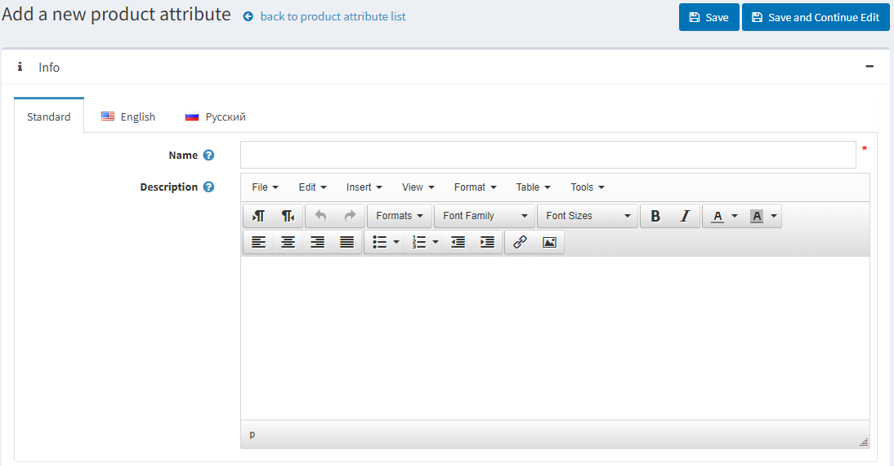
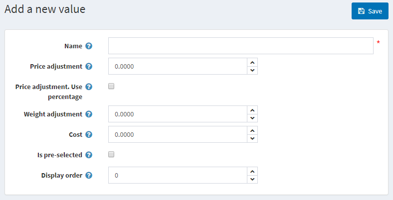
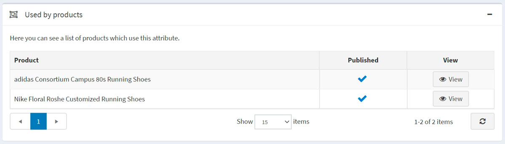

商品屬性
商品屬性是商品的變體（例如：顏色、尺寸）。
使用者可以建立各種屬性組合。例如，一個商品可以有各種尺寸和顏色。因此，使用者會建立兩個屬性及其值，例如「尺寸」（S、M、L）和「顏色」（紅、藍、白），然後根據商品的庫存狀況來設定群組。
在 nopCommerce 中，商品屬性用於 庫存追蹤，也可能造成 價格差異。
若要定義商品屬性，請前往 目錄 → 屬性 → 商品屬性。

Note
預設情況下，nopCommerce 並未預先建立任何商品屬性。
新增商品屬性
點擊 新增 以增加一個屬性。

在「新增商品屬性」視窗中，填寫 名稱 和 描述 欄位。
點擊 儲存並繼續編輯 以進入「預定義值」編輯面板。
新增預定義值
在「預定義值」面板中，點擊 新增一個值，系統將會開啟「新增一個值」視窗：

在「新增一個值」視窗中，定義以下項目：
- 屬性 名稱。
- 選擇此屬性值時所套用的 價格調整。例如，填入 '10' 即增加 10 元。若勾選 價格調整：使用百分比，則以百分比計算。
- 價格調整：使用百分比 核取方塊可用於決定價格調整為百分比而非絕對數值。
- 選擇此屬性值時所套用的 重量調整。
- 成本 屬性值是指構成此值的所有元件成本。這可能是向第三方供應商購買元件時的採購價格，或是若元件為自行製造時，材料與生產流程的合併成本。
- 此值是否為顧客 預先勾選。
- 在屬性清單中的 顯示順序。
填寫欄位後，點擊 儲存。
Tip
在新增商品屬性時，不需要立即建立屬性值；您可以稍後在將特定的商品屬性套用到商品時再進行建立。 一旦設定好屬性和值，即可在商品編輯頁面的「商品屬性」面板中進行分組與管理。
Note
某些商店經營者傾向於強調透過屬性區分的商品，並為每個特定屬性建立獨立的商品（例如，將藍色 T 恤和紅色 T 恤分開列出）。在這種情況下，我們建議建立群組商品（如範例中的襯衫），這樣當顧客查看該群組商品時，所有的變體都會顯示在同一個頁面上。閱讀更多關於 群組商品 的資訊。
Warning
新增或更新現有的「預定義值」不會影響已經擁有該屬性的商品。
商品使用面板
在「商品使用」面板中，您可以選擇哪些商品使用此屬性：
